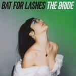

Bat For Lashes The Bride
(Warner Bros.)
Natasha Khan has always used Bat for Lashes as a vehicle for stories, whether from her personal history or her imagination. Throughout her career, she used her entrancing voice and otherworldly music to weave tales both fantastical and mundane with equal passion. On The Bride, Khan goes a step further, creating an arc about a woman whose fiancé dies on their wedding day, sending her spiraling into a journey of self-discovery and healing.
Yes, a concept album is difficult to pull off in the best of circumstances, but damn does Khan sell it. By letting the music guide the narrative, not the other way around, she (mostly) avoids the storyboard pitfalls that plague other such endeavors. It also helps that Khan's never sounded better. She hits that sweet spot between power and control that dazzles but doesn't overwhelm.
Listen to In God's House, which turns a wedding organ inside-out, flattening the notes into a funeral dirge. It's only in the chorus that synths sparkle up, reflecting the prophetic vision the bride sees of her love's demise. "What's this I see?/My baby died on the beach/What's this I see?/Fire," Khan sings, shouting out the last word in a stunning burst of horror and heartbreak. Joe's Dream doesn't quite reach that level of pathos, but its thumping drumbeat and muted guitar chords wisely put the focus on Khan's vulnerable, almost desperate vocals.
It's fitting that The Bride came out 10 years after Bat for Lashes' debut, Fur and Gold, as that's the last record to hone in on Khan's own perspective, if not necessarily her actual life. Now, instead of playfully swinging down the road on a bike in What's A Girl To Do?, the bride of Honeymooning Alone cries and rages as the "girl that was denied." Next, the propulsive highlight of Sunday Love finds the bride trying to outrun her own tragedy, the electronic beat spinning like spokes on a wheel.
When people are faced with death, they look beyond the everyday to seek answers or lay blame elsewhere. Khan does both. She curses out the heavens on the stormy Never Forgive The Angels. On the string-swept Close Encounters, she hopes that her lover's spirit exists as a "pale green light" that she will join one day, becoming "a dream of time and sound."
Nearly all these tracks work perfectly together for the fable Khan has crafted. Widow's Peak is the only number that fails to land. The spoken-word piece goes overboard with the mysticism, throwing in wind chimes and lines about dreams, goddesses and demons. It pulls you out of the experience and is not a song you'll need to hear more than once.
Thankfully, the beautiful closing tracks are a restoration both for the album and the bride. The healing begins on If I Knew, a sparse piano ballad as strong as Laura. "Baby, if I knew what I know now/I could never turn it back around," she sings, knowing the relationship was still worth the pain. I Will Love Again is a mirror of Joe's Dream, stripped back to put Khan's voice in the center. But she sings each word with confidence, the fragility left behind. In Your Bed finds the bride reaching the point where she can look back and recall her time with her love happily, as strings swirl skywards around her.
With The Bride, Khan has created a sublime tale of sorrow and recovery, of accepting loss and working through pain to become a stronger person. Likewise, Khan has taken her interest in similar journeys from earlier albums and used them to make her most consistently captivating work thus far. If there's one way that art imitates life here, it's that remembering and learning from the past can help build a stronger present.
7 July, 2016 - 04:42 — Joe Marvilli